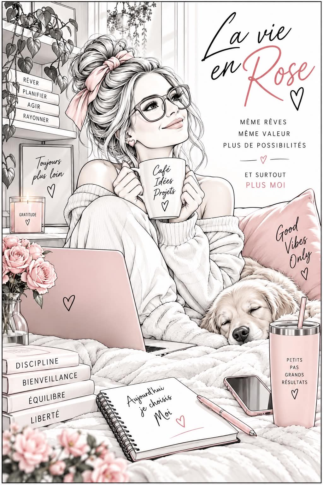

VOIR
Observer les faits, les répétitions, les inconforts et les changements. Commencer par nommer ce qui semblait flou.
PRÉVENTION · ÉDUCATION · AUTONOMIE
Quelque chose te dérange, mais tu ne sais pas encore comment le nommer?
RoseAura t’aide à mettre des mots sur ce que tu vis, à reconnaître des dynamiques et à découvrir tes options. À ton rythme, sans devoir tout raconter.
LA CLARTÉ OUVRE DES POSSIBILITÉS
On ne peut pas reconnaître ce qu’on ne nous a jamais appris à voir. Notre approche commence par des repères simples, avant que la situation devienne urgente.
Observer les faits, les répétitions, les inconforts et les changements. Commencer par nommer ce qui semblait flou.
Mettre du sens sur l’expérience, avec des mots clairs et des exemples. Explorer sans imposer de verdict.
Découvrir les options : parler, exprimer une limite, s’informer ou demander de l’aide. Choisir une prochaine étape adaptée.
Prévention avant réparation.
LES LUNETTES ROSEAURA
Six questions pour observer une situation avec davantage de recul. Ces lunettes structurent la réflexion; elles ne rendent pas de diagnostic.
LES FAITS
Décris les événements observables. Essaie de distinguer les faits de ton interprétation.
UN UNIVERS POUR PLUSIEURS RÉALITÉS
Jeunes, adultes, aînés, parents et proches : chacun peut avoir besoin de repères. Les milieux éducatifs, communautaires et de travail ont aussi leur place.
Reconnaître ta valeur, tes besoins et tes forces, au-delà de ta performance ou du regard des autres.
Découvrir MOINommer ce qui te convient, ce qui te dérange et ce que tu aimerais pouvoir exprimer.
Explorer ma voixObserver le respect, la réciprocité, la communication et la place laissée à ton identité.
Observer ma libertéMettre des mots sur des comportements qui surveillent, isolent ou limitent progressivement l’autonomie.
Observer la répétitionDévelopper ton vocabulaire pour reconnaître et exprimer ce que tu ressens, sans jugement.
Écouter mon ressentiCommencer par écouter et observer. Découvrir les ressources et les possibilités de soutien.
Trouver une ressourceAucun sujet trouvé. Essaie un autre mot ou efface ta recherche.
L’UNIVERS ROSEAURA
Des portes d’entrée pour commencer seul, réfléchir avec d’autres ou outiller un milieu. Les formats et disponibilités se précisent avec RoseAura.
BOOK 01 · MOI
Un livre pensé court, interactif, inclusif et accessible. L’estime, la confiance, les limites, ta voix et tes lunettes RoseAura : des repères pour revenir à toi.
Projet éditorial en préparation. Demande les informations sur sa disponibilité.
M’informer sur MOI
Pour les écoles, organismes, entreprises et groupes. Clarifions le public, les objectifs et le format qui convient.
Discuter d’une conférenceUne réflexion individuelle ou en groupe autour de repères et de gestes concrets, dans un cadre non clinique.
Discuter d’une rencontreDes questions, des exercices et des pistes pour commencer à ton rythme. Les Lunettes RoseAura sont un premier pas.
Essayer les LunettesNOTRE MISSION
RoseAura prend racine dans l’histoire de Mélissa, notamment son vécu d’intimidation et de violence. Cette origine donne une direction : rendre accessibles les repères qui peuvent manquer quand quelque chose nous dérange et qu’on ne sait pas encore pourquoi.
RoseAura est une présence, un univers de prévention et d’éducation. Son rôle est de nommer, d’expliquer et de rendre les options plus visibles, tout en respectant le rythme et la liberté de chacun.
La clarté ne contrôle pas l’avenir. Elle augmente les options.
QUAND TU AS BESOIN DE SOUTIEN
RoseAura offre des repères éducatifs. Pour une situation urgente ou un besoin de soins, contacte une ressource spécialisée.
QUELQUES RÉPONSES
À toute personne qui souhaite mieux se comprendre, reconnaître des dynamiques et découvrir ses options. Un contenu ou une conférence peut être adapté à un public précis.
RoseAura est une entreprise de prévention et d’éducation. Les outils et rencontres éducatives complètent les ressources existantes. Les évaluations, diagnostics et soins relèvent des professionnels compétents.
Tu peux commencer seul, à ton rythme, avec les questions proposées. L’exercice des Lunettes ne demande aucune donnée personnelle et tes réponses ne sont pas recueillies sur ce site.
Écris à RoseAura en précisant ce qui t’intéresse. La disponibilité, le format et les modalités seront confirmés avant tout engagement.
UNE PROCHAINE ÉTAPE, À TON RYTHME
Un livre, une conférence pour ton milieu ou une rencontre éducative? Commence par une demande d’information.
info@lesconstructionslapointe.com